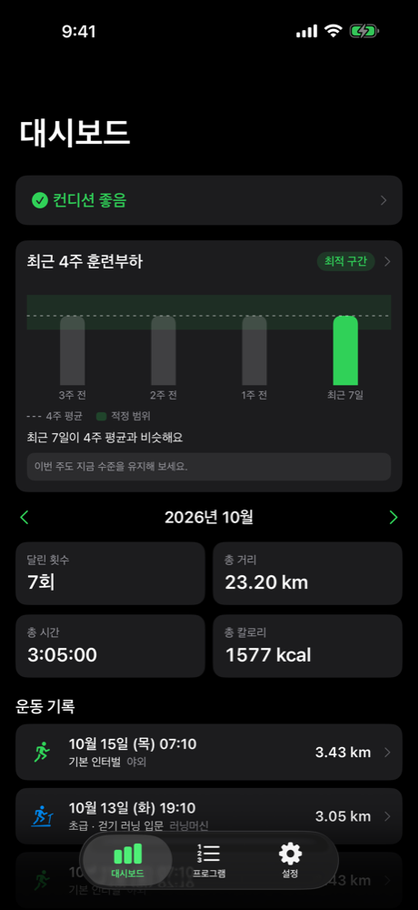
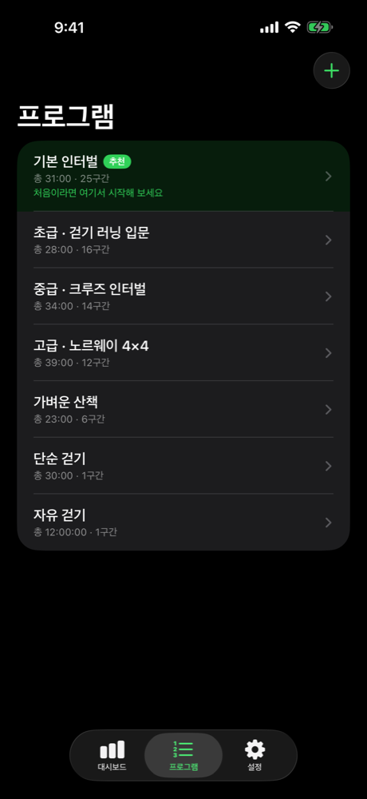
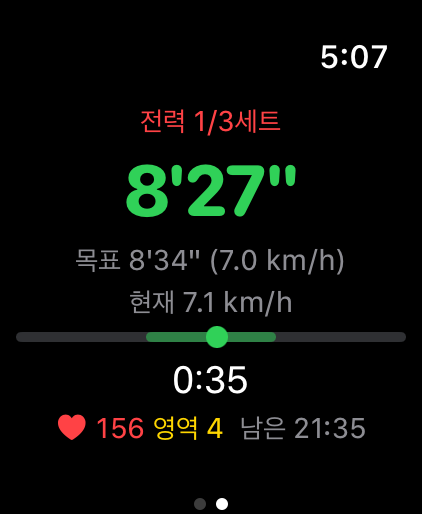

인터벌러너
애플워치 걷기·달리기 인터벌 코치 · iPhone과 Apple Watch용 · 무료
인터벌러너는 Apple Watch에서 걷기와 달리기를 번갈아 하는 인터벌 운동을 한국어 음성으로 안내하는 무료 앱입니다. 구간마다 "시속 6 킬로미터로 3분"처럼 속도와 시간까지 알려 줘서, 러닝머신에서도 야외에서도 화면을 보지 않고 따라갈 수 있습니다. 회원 가입이 없고, 기록은 내 기기에만 저장됩니다.
App Store에서 받기


이런 분께 맞아요
- 걷기·달리기 인터벌로 무리 없이 달리기를 시작하고 싶은 분
- 러닝머신에서 속도를 바꿀 때마다 시계를 보기 번거로운 분
- 오늘 컨디션과 최근 훈련량을 보고 쉴 날을 정하고 싶은 분
할 수 있는 것
- 한국어 음성 안내: 워밍업·달리기·회복·쿨다운 구간을 여성·남성 목소리와 진동으로 알려 줍니다. 이어폰이 없으면 워치 스피커로 "목표 6.5, 직전속도 6.2"처럼 짧게 알려 줍니다.
- 러닝머신과 야외: 러닝머신 계기판처럼 시속(km/h)으로 안내합니다. 야외에서는 경로와 상승 고도를 기록합니다.
- 내장 프로그램과 직접 만들기: 걷기 러닝 입문, 크루즈 인터벌, 노르웨이 4×4, 산책·걷기. iPhone에서 구간별 속도와 시간을 바꿀 수 있습니다.
- 자세 알림: 보폭이 평소보다 넓어지거나 착지가 무거워지면 음성으로 알려 줍니다.
- 기록과 회복: 월별 기록, 구간별 속도·심박, 기록 기간에 맞춰 보여 주는 훈련부하 그래프, 수면·심박변이도·안정시 심박으로 계산한 컨디션(좋음·보통·주의·나쁨), 요일별 주간 스케줄.
- 워치만으로 운동: 프로그램을 워치에 동기화하면 iPhone 없이 뛸 수 있습니다.
다른 앱과 비교
각 앱의 장점도 함께 적었습니다. 2026년 10월 기준, 각 앱의 App Store 소개를 바탕으로 정리했습니다.
| 앱 | 잘하는 것 | 인터벌러너와 다른 점 |
|---|---|---|
| Apple 운동 앱 (사용자 지정 인터벌) | 기본 앱이라 설치가 필요 없고, 구간이 자동으로 바뀝니다 | 목표를 페이스(분/km)로 다룹니다. 인터벌러너는 시속과 시간을 한국어 음성으로 말해 줍니다 |
| 런데이 | 30분 달리기 입문 같은 목표형 플랜과 한국어 코칭, 사용자가 많습니다 | 인터벌러너는 내가 정한 속도·시간으로 인터벌을 짜서 워치로 안내하는 데 집중합니다 |
| Nike Run Club | 무료 가이드 런이 많고 워치 단독 실행을 지원합니다 | 가이드 런은 정해진 내용을 듣는 방식입니다. 인터벌러너는 구간마다 목표 속도를 알려 줍니다 |
| Intervals Pro | 시간·거리 기준 구간, 페이스·심박 목표 등 설정이 세밀합니다 | 인터벌러너는 아직 거리 기준 구간이 없습니다. 대신 한국어 음성, 컨디션·훈련부하·주간 스케줄이 있습니다 |
사용 전 확인
- 운동 진행과 음성 안내에는 Apple Watch가 필요합니다. iOS 26.0, watchOS 26.0 이상.
- 전체 음성 안내는 Bluetooth 이어폰이 Apple Watch에 연결되어 있을 때 재생됩니다.
- 현재 대한민국 App Store에서만 받을 수 있고, 음성 안내는 한국어만 지원합니다.
- 컨디션과 훈련부하는 운동 계획을 돕는 참고 정보이며 의학적 진단이 아닙니다.
문의
사용 중 문제나 제안이 있으면 아래 주소로 보내 주세요. 기기 종류와 OS 버전, 문제가 생긴 상황을 함께 적어 주시면 빠르게 확인할 수 있습니다.
이메일: kindfamily@kakao.com
자주 묻는 질문
Apple Watch가 꼭 필요한가요?
네. 운동 진행과 음성 안내는 Apple Watch 앱에서 동작합니다. iPhone 앱은 프로그램 편집, 주간 계획, 기록 조회를 담당합니다.
심박수나 컨디션이 표시되지 않습니다.
건강 데이터 접근 권한이 꺼져 있을 수 있습니다. iPhone 설정 → 건강 → 데이터 접근 및 기기 → 인터벌러너에서 항목을 켜 주세요.
야외 달리기 경로가 기록되지 않습니다.
iPhone 설정 → 개인정보 보호 및 보안 → 위치 서비스 → 인터벌러너에서 "앱을 사용하는 동안"을 선택해 주세요.
iPhone에서 만든 프로그램이 워치에 보이지 않습니다.
두 기기가 가까이 있고 Bluetooth가 켜져 있는지 확인한 뒤, 양쪽 앱을 한 번씩 열어 주세요.
음성 안내가 들리지 않습니다.
음성 안내는 에어팟 같은 블루투스 이어폰이 Apple Watch에 연결되어 있을 때 재생됩니다. 이어폰이 없으면 진동(구간이 바뀔 때 2번)과 화면으로 안내하고, 버전 1.1부터는 구간이 바뀔 때 목표 속도만 워치 스피커로 짧게 알려 줍니다(iPhone 앱 설정 → 운동 사운드 → "이어폰 없이 속도 알림"에서 끌 수 있습니다). 이어폰이 iPhone에만 연결되어 있으면 워치에서 음성이 나오지 않으니, 워치의 제어 센터에서 오디오 출력을 확인해 주세요. iPhone 앱 설정에서 음성 안내가 켜져 있는지도 확인해 주세요.
걷고 나면 워치에 달리기를 권하는 알림이 옵니다. 끌 수 있나요?
네. iPhone 앱 설정 → "걷기 후 달리기 제안"을 끄면 됩니다. 이 알림은 인터벌러너로 아직 운동한 적이 없을 때만, 많아야 7일에 한 번, 모두 4번까지만 보내며 첫 운동을 마치면 더 이상 보내지 않습니다.
내 데이터는 어디에 저장되나요?
기록은 iPhone과 Apple Watch 안에 저장되며 외부 서버로 전송하지 않습니다. 완료한 운동은 Apple 건강 앱에도 저장됩니다. 앱을 삭제하면 앱 안의 기록도 함께 삭제됩니다.
휴대폰을 바꾸면 기록이 옮겨지나요?
운동 프로그램과 설정은 기기 백업으로 옮겨지지만, 건강 정보가 담긴 앱 안의 운동 기록과 회복 이력은 백업에서 제외되어 옮겨지지 않습니다. Apple 건강 앱에 저장된 운동은 그대로 남습니다.
컨디션은 의학적으로 정확한가요?
아니요. 컨디션과 훈련부하는 운동 계획을 돕는 참고 정보이며 의학적 진단이 아닙니다. 몸이 불편하면 운동을 멈추고 의료 전문가와 상의하세요.